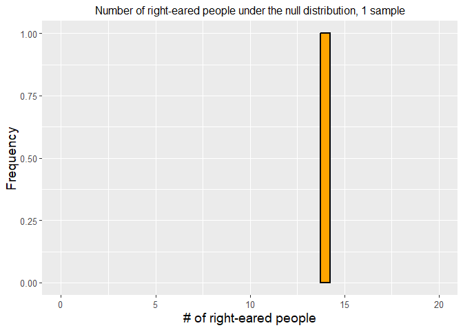
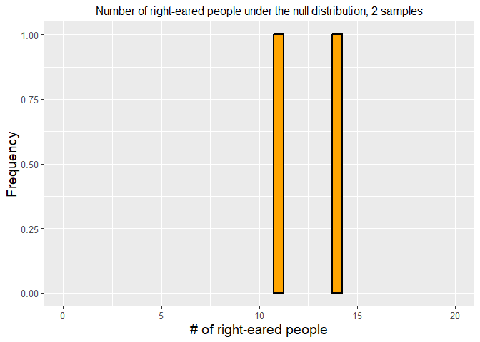
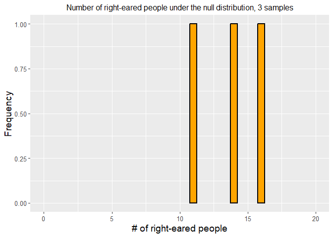

require(binom)## Loading required package: binom## Warning: package 'binom' was built under R version 4.2.2require(ggplot2)Before doing this, review the Introduction To Hypothesis
Testing Via Binomial Tests lecture set slides from https://sites.google.com/view/biostats/lessons/hypothesis-testing-with-the-binomial-distribution
and the 3_hypothesis_testing_and_binomial.R script in
the lecture_files folder of the CUNY-BioStats github
repository.
You should also complete the swirl tutorial!
Remember you should
Using the bat paper from class (Geipel et al. 2021), let’s consider how to analyze data showing all 10 bats chose the walking over the motionless model.
binom.test(10,10)##
## Exact binomial test
##
## data: 10 and 10
## number of successes = 10, number of trials = 10, p-value = 0.001953
## alternative hypothesis: true probability of success is not equal to 0.5
## 95 percent confidence interval:
## 0.6915029 1.0000000
## sample estimates:
## probability of success
## 1We use the binom.test function. We only need arguments for # of succeses and # of trials. By default it runs a 2-sided test against a null hypothesis value of p = .5. You can see how to update thee options by looking at the help file.
?binom.test## starting httpd help server ... doneNote the confidence interval is assymetric since its estimated to be 1! We can see other options using the binom.confint function from the binom package.
library(binom)
binom.confint(10,10)## method x n mean lower upper
## 1 agresti-coull 10 10 1.0000000 0.6791127 1.043355
## 2 asymptotic 10 10 1.0000000 1.0000000 1.000000
## 3 bayes 10 10 0.9545455 0.8292269 1.000000
## 4 cloglog 10 10 1.0000000 0.6915029 1.000000
## 5 exact 10 10 1.0000000 0.6915029 1.000000
## 6 logit 10 10 1.0000000 0.6915029 1.000000
## 7 probit 10 10 1.0000000 0.6915029 1.000000
## 8 profile 10 10 1.0000000 0.7303058 1.000000
## 9 lrt 10 10 1.0000000 0.8252466 1.000000
## 10 prop.test 10 10 1.0000000 0.6554628 1.000000
## 11 wilson 10 10 1.0000000 0.7224672 1.000000Make sure you are comfortable with null and alternative hypotheses for all examples.
Answer
\(H_{0}\): There is no difference in the number of people who prefer their left ear or their right ear.
\(H_{A}\): There is a difference in the number of people who prefer their left ear or their right ear.
binom.test(19, 25)##
## Exact binomial test
##
## data: 19 and 25
## number of successes = 19, number of trials = 25, p-value = 0.01463
## alternative hypothesis: true probability of success is not equal to 0.5
## 95 percent confidence interval:
## 0.5487120 0.9064356
## sample estimates:
## probability of success
## 0.76The probability of success, assuming right-eared is success and left-eared is failure, is (19/25) 0.76, or 76%.
Simulation
#get 10000 samples
sampling_experiment = rbinom(10000, 25, 0.5)
sampling_experiment_df <- data.frame('Right_Handed' = sampling_experiment)#ggplot2 had issue with subset dataframe for bar, thus remade frame…
ggplot(data.frame(Right_Handed = sampling_experiment_df[1,]), aes(Right_Handed)) +
geom_bar(size = 1, width = 0.5, fill = "orange", color = "black")+
xlim(0, 20) +
xlab("# of right-eared people")+
ylab("Frequency")+
ggtitle("Number of right-eared people under the null distribution, 1 sample")+
theme(axis.title.x = element_text(size = 14),
axis.title.y = element_text(size = 14),
axis.text.y = element_text(size = 10),
axis.text.x = element_text(size = 10),
legend.text =element_text(size = 10),
legend.title = element_text(size = 10),
legend.position = "bottom",
plot.title = element_text(hjust = 0.5, size = 12))+
guides(fill = F)## Warning: The `<scale>` argument of `guides()` cannot
## be `FALSE`. Use "none" instead as of ggplot2
## 3.3.4.
# plot 2 ####
ggplot(data.frame(Right_Handed = sampling_experiment_df[1:2,]), aes(Right_Handed)) +
geom_bar(size = 1, width = 0.5, fill = "orange", color = "black")+
xlim(0, 20) +
xlab("# of right-eared people")+
ylab("Frequency")+
ggtitle("Number of right-eared people under the null distribution, 2 samples")+
theme(axis.title.x = element_text(size = 14),
axis.title.y = element_text(size = 14),
axis.text.y = element_text(size = 10),
axis.text.x = element_text(size = 10),
legend.text =element_text(size = 10),
legend.title = element_text(size = 10),
legend.position = "bottom",
plot.title = element_text(hjust = 0.5, size = 12))+
guides(fill = F)
# plot 3 ####
ggplot(data.frame(Right_Handed = sampling_experiment_df[1:3,]), aes(Right_Handed)) +
geom_bar(size = 1, width = 0.5, fill = "orange", color = "black")+
xlim(0, 20) +
xlab("# of right-eared people")+
ylab("Frequency")+
ggtitle("Number of right-eared people under the null distribution, 3 samples")+
theme(axis.title.x = element_text(size = 14),
axis.title.y = element_text(size = 14),
axis.text.y = element_text(size = 10),
axis.text.x = element_text(size = 10),
legend.text =element_text(size = 10),
legend.title = element_text(size = 10),
legend.position = "bottom",
plot.title = element_text(hjust = 0.5, size = 12))+
guides(fill = F)
# plot all ####
ggplot(sampling_experiment_df, aes(Right_Handed)) +
geom_bar(size = 1, width = 0.5, fill = "orange", color = "black")+
xlim(0, 20) +
xlab("# of right-eared people")+
ylab("Frequency")+
ggtitle("Number of right-eared people under the null distribution, 10,000 sample")+
theme(axis.title.x = element_text(size = 14),
axis.title.y = element_text(size = 14),
axis.text.y = element_text(size = 10),
axis.text.x = element_text(size = 10),
legend.text =element_text(size = 10),
legend.title = element_text(size = 10),
legend.position = "bottom",
plot.title = element_text(hjust = 0.5, size = 12))+
guides(fill = F)## Warning: Removed 6 rows containing non-finite values
## (`stat_count()`).## Warning: Removed 1 rows containing missing values
## (`geom_bar()`).#using the binomial distribution####
using_distribution = dbinom(0:25, 25, 0.5)
using_distribution## [1] 2.980232e-08 7.450581e-07 8.940697e-06 6.854534e-05 3.769994e-04
## [6] 1.583397e-03 5.277991e-03 1.432598e-02 3.223345e-02 6.088540e-02
## [11] 9.741664e-02 1.328409e-01 1.549810e-01 1.549810e-01 1.328409e-01
## [16] 9.741664e-02 6.088540e-02 3.223345e-02 1.432598e-02 5.277991e-03
## [21] 1.583397e-03 3.769994e-04 6.854534e-05 8.940697e-06 7.450581e-07
## [26] 2.980232e-08sum(using_distribution)## [1] 1Number_right_eared = c(0:25)
pdf = data.frame(Number_right_eared, using_distribution)
plot(0:25, using_distribution)#for all plots, R takes a best guess at the best type of plot; you can also
#direct it with the type command. ?plot for more infobarplot(using_distribution, xlab = "# of Right-eared people out of 25", ylab = "Probability of being drawn from population of p = 0.5" )ggplot(pdf, aes(x= Number_right_eared, y = using_distribution)) +
geom_bar(size=1, width = 1, fill="orange", color="black", stat = "identity")+
xlim(0,20) +
xlab("# of right-eared people")+
ylab("Frequency")+
ggtitle("Number of right-eared people under the binomial distribution")+
theme(axis.title.x = element_text(size = 14),
axis.title.y = element_text(size = 14),
axis.text.y = element_text(size = 10),
axis.text.x = element_text(size=10),
legend.text =element_text(size = 10),
legend.title = element_text(size = 10, face="bold"),
legend.position = "bottom",
plot.title = element_text(hjust = 0.5, size = 14))+
guides(fill = F)## Warning: Removed 5 rows containing missing values
## (`position_stack()`).## Warning: Removed 2 rows containing missing values
## (`geom_bar()`).#probability of 14 or more####
(1-sum(dbinom(0:18, 25 , 0.5))) * 2## [1] 0.0146333#multiply by 2 since symmetrical
#or
(1-pbinom(18, 25, 0.5)) * 2## [1] 0.0146333#remember the one comes from the fact the entire distribution must sum to 1
#or
#using our sample
length(sampling_experiment[sampling_experiment >= 14 | sampling_experiment <= 4])/
length(sampling_experiment)## [1] 0.3446#binomial test####
binom.test(x = 19, n = 25, p = 0.5)##
## Exact binomial test
##
## data: 19 and 25
## number of successes = 19, number of trials = 25, p-value = 0.01463
## alternative hypothesis: true probability of success is not equal to 0.5
## 95 percent confidence interval:
## 0.5487120 0.9064356
## sample estimates:
## probability of success
## 0.76Take a coin and flip it 25 times, count Heads (Right-Eared) and Tails (Left-Eared), then repeat x10,000 times and get a distribution of proportions, Heads and Tails, or Right_Eared vs. Left-Eared.
Equations
If \(p\) is the probability of success in any single trial then the probability of \(x\) successes in \(n\) trials is \[ f(x) = \binom{n}{x} p^x (1 - p)^{n - x}, \qquad x = 0, 1, 2, \ldots, n. \] where \[ \binom{n}{x} = \frac{n!}{x! \, (n - x)!} \] is called a binomial coefficient and gives the distribution its name. And this is the PMF of the binomial distribution.
The fact that probabilities sum to one is a special case of the binomial theorem \[ \sum_{x = 0}^n \binom{n}{x} a^x b^{n - x} = (a + b)^n. \]
The p-value is 0.01463. So, we reject the null hypothesis that there is no difference between the number of people who are right-eared and left-eared.
As above, using the function binom.test, the 95%
confidence interval is 0.5487120 to 0.9064356.
Also…
binom.confint(19, 25)## method x n mean lower upper
## 1 agresti-coull 19 25 0.76 0.5624805 0.8882596
## 2 asymptotic 19 25 0.76 0.5925865 0.9274135
## 3 bayes 19 25 0.75 0.5854415 0.9037771
## 4 cloglog 19 25 0.76 0.5420481 0.8842776
## 5 exact 19 25 0.76 0.5487120 0.9064356
## 6 logit 19 25 0.76 0.5584422 0.8880044
## 7 probit 19 25 0.76 0.5666202 0.8934027
## 8 profile 19 25 0.76 0.5724026 0.8967715
## 9 lrt 19 25 0.76 0.5724301 0.8968455
## 10 prop.test 19 25 0.76 0.5447916 0.8984194
## 11 wilson 19 25 0.76 0.5657032 0.8850369The 95% confidence interval includes the
MAKE SURE TO THINK ABOUT YOUR TEST OPTIONS
Answer
\(H_{0}\): There is no difference in test scores, considering whether the dog score by chance (25/100) or if the students helped the dog (33/100).
\(H_{A}\): There is a difference in test scores, considering whether the dog scores by chance (25/100) or if the students helped the dog (33/100).
The probability of success, assuming right-eared is success and left-eared is failure, is (19/25) 0.76, or 76%.
binom.test(33, 100, p = 0.25,
alternative = c("two.sided"),
conf.level = 0.95)##
## Exact binomial test
##
## data: 33 and 100
## number of successes = 33, number of trials = 100, p-value = 0.08222
## alternative hypothesis: true probability of success is not equal to 0.25
## 95 percent confidence interval:
## 0.2391985 0.4311728
## sample estimates:
## probability of success
## 0.33binom.test(33, 100, p = 0.25,
alternative = c("greater"),
conf.level = 0.95)##
## Exact binomial test
##
## data: 33 and 100
## number of successes = 33, number of trials = 100, p-value = 0.0446
## alternative hypothesis: true probability of success is greater than 0.25
## 95 percent confidence interval:
## 0.2523035 1.0000000
## sample estimates:
## probability of success
## 0.33Reject the null hypothesis - there is evidence that the students helped the dog with the test.